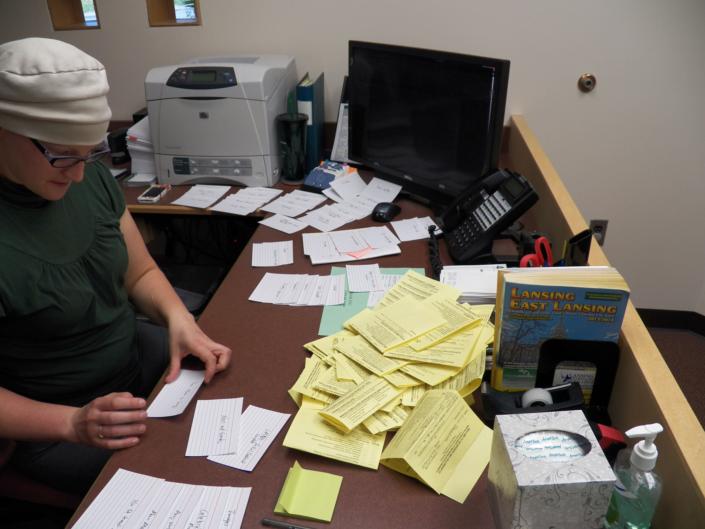
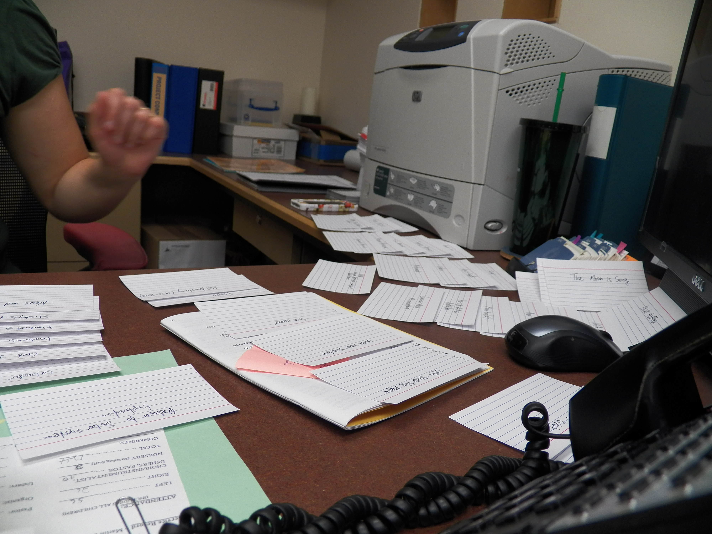
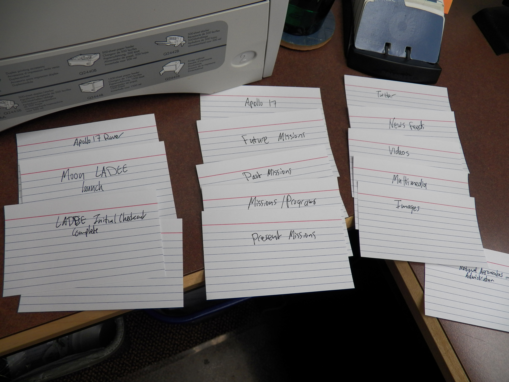
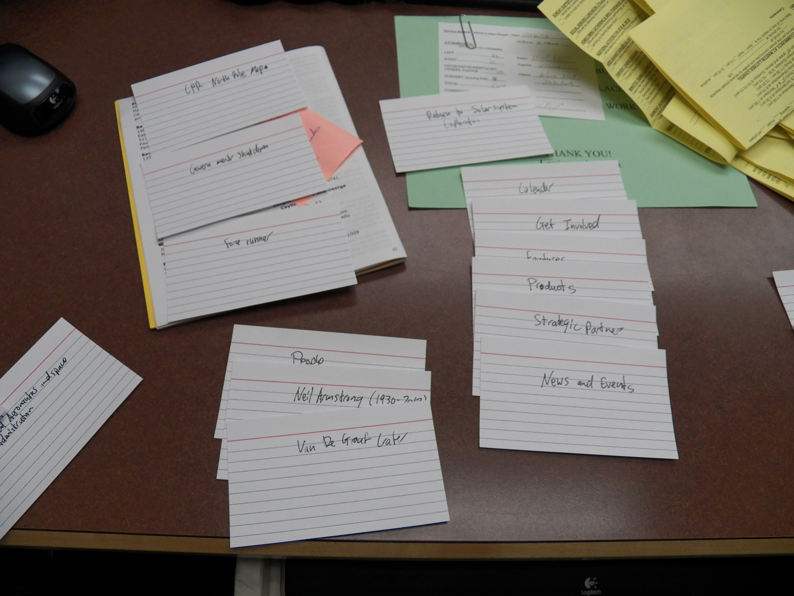

Card Sorting Data for NASA Moon Site: Julie
This was some of the data that I gathered from my card sorting exercise on the participant Julie. This participant made categories based on Missions, the Moon, Craters, Earth's relationship to the moon, Images of the Moon, and News/Events. The structure that this participant choose to use was very different from the way that I had initially categorized the information, and she seemed to create groups with unique criteria.




| Julie: NASA Moon Site |
Van De Graaf Crater |
CPR North Pole Map |
Earth Orbit |
Earth and Moon from Mars |
Earth's Moon Home |
|
Moon Meteorite |
Many Worlds, Many Craters |
Return to Solar System Exploration |
|
NASA |
People |
Neil Armstrong (1930-2012) |
|
Calendar |
News and Events |
News Feed |
Government Shutdown |
Twitter |
Multimedia |
Video |
Images |
|
Features |
Products |
Get Involved |
Strategic Partners |
|
Missions/Programs |
Past Missions |
Present Missions |
Future Missions |
Apollo 17 |
Apollo 17 Rover |
Moon LADEE Launch |
LADEE Initial Checkout Complete |
Comet Hunter Mission |
Forerunner |
|
About the Moon |
Moon Toolkit |
Moon Tours |
Celebrate your Moon |
International Observe the Moon Night |
3D Moon |
|
Farside of the Moon MoonKAM |
Iron Moon |
Common Moon Misconceptions |
The Moon is Song |
NASA Lunar Science Forum |